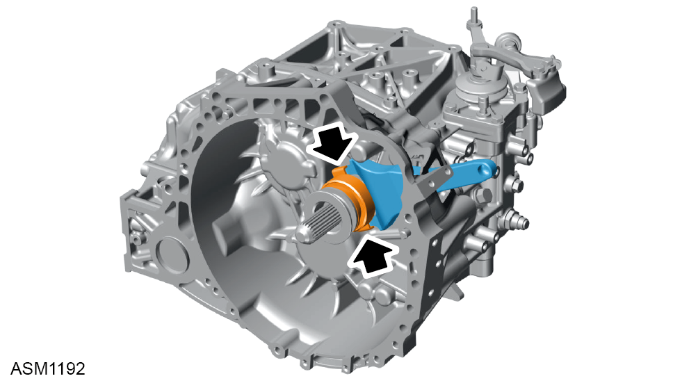
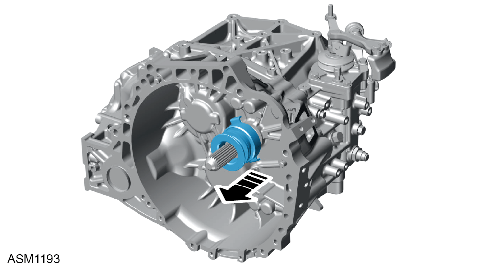
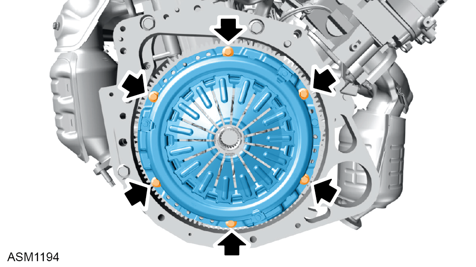
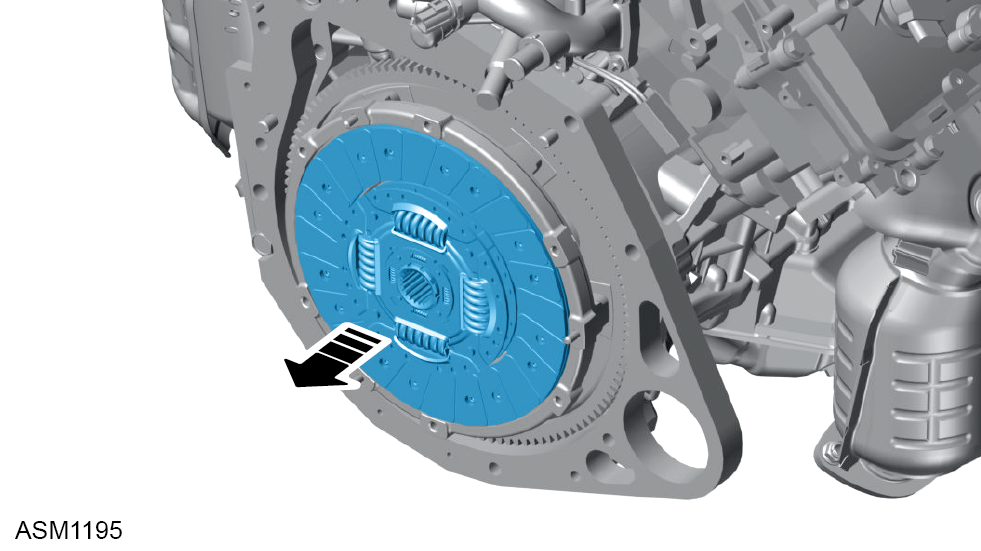
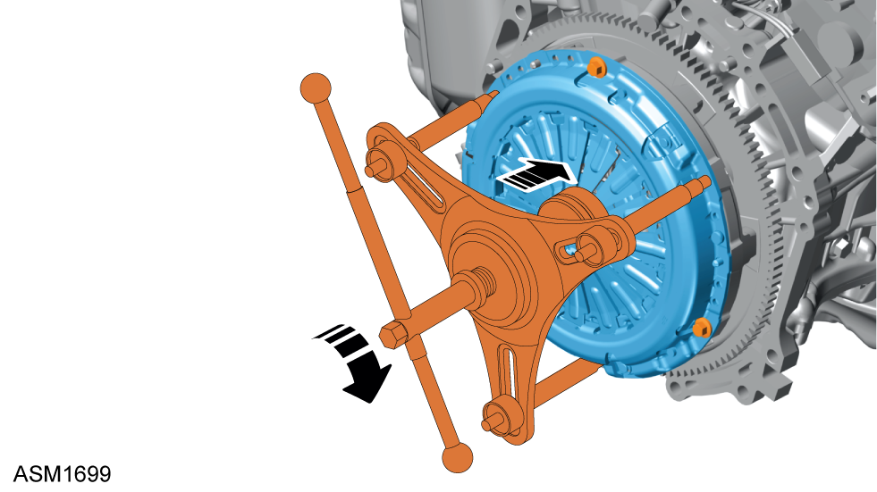
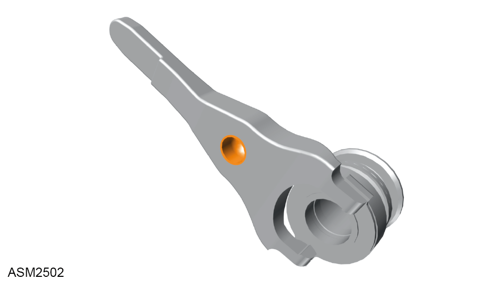
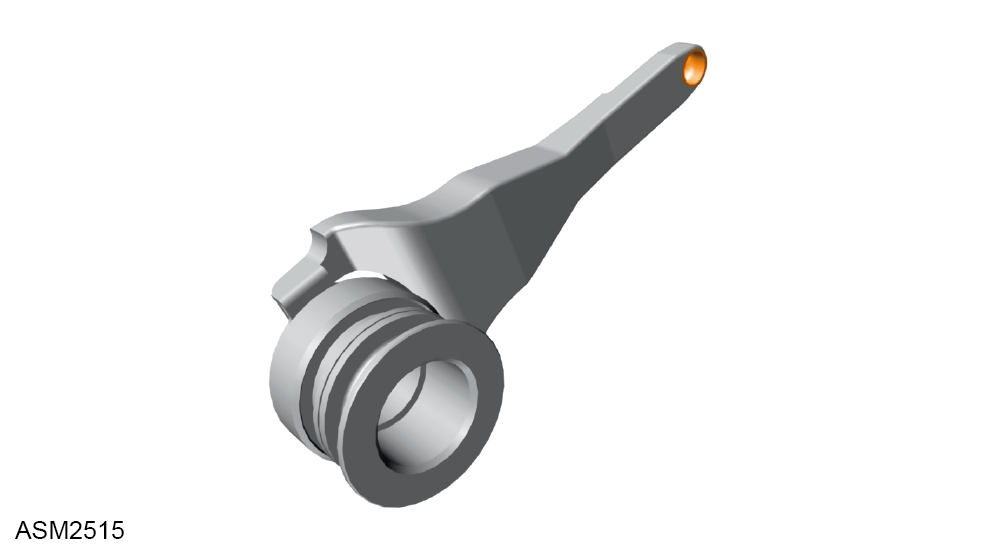
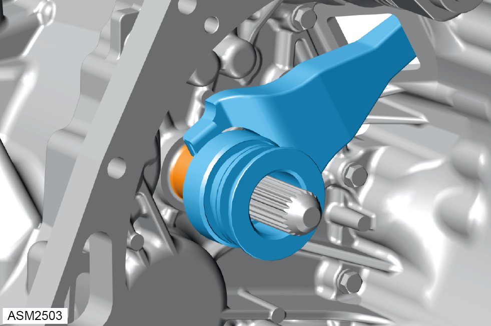
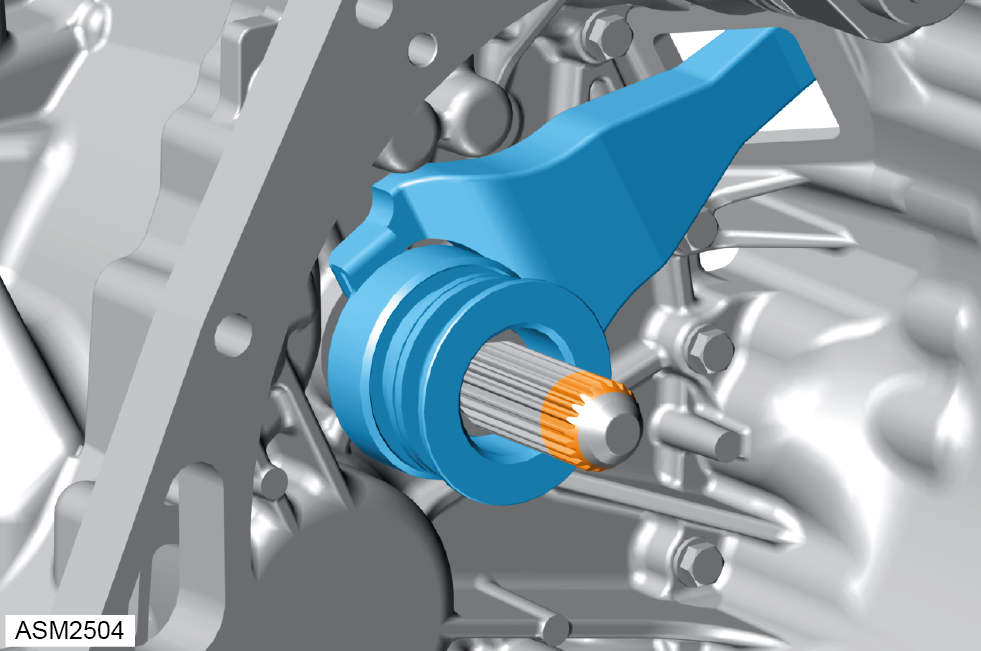

Clutch Assembly - V6
Print
Operation Code: 47.01.03-02
Removal
- Remove transmission assembly. Refer to procedure.

- Disengage clutch fork from clutch release bearing.
- Remove clutch fork from transmission.

- Remove clutch release bearing from input shaft.
- Clean bellhousing and input shaft using suitable degreaser.

- Remove M8x16 bolts (x6) securing clutch cover to flywheel. Torque 20 Nm.
 CAUTION: Loosen bolts in a diagonal sequence to release the clamp load without distorting the clutch cover.
CAUTION: Loosen bolts in a diagonal sequence to release the clamp load without distorting the clutch cover.
NOTE: Apply permabond A130 to bolts during installation.
- Match mark clutch cover and flywheel.
- Remove clutch cover.

- Remove clutch friction disc.
Installation
- Installation is the reverse of removal procedure except for the following:
- Use clutch alignment tool to position clutch friction disc on to flywheel.
NOTE: The end of the clutch alignment tool should not protrude further than the clutch cover spring fingers.
- Install clutch compression tool T000T1524F.

- Operate clutch compression tool until there is no gap between clutch cover and flywheel.
- Complete two full turns to preload clutch diaphragm.
- Tighten installed clutch cover bolts (x3). Torque 20 Nm.
- Remove clutch compression tool T000T1524F.
- Install remaining clutch cover bolts (x3). Torque 20 Nm.
- Remove clutch alignment tool.
- Remove dirt or grease from contact surfaces of clutch fork to release bearing, support peg and slave cylinder push rod.

- Apply a small amount of Fuchs RENOLIT PASTE PW to support peg recess.

- Apply a small amount of Fuchs RENOLIT PASTE PW to slave cylinder push rod.

- Apply small amount of Fuchs RENOLIT PASTE PW to input shaft collar on transmission.
- Install clutch fork to transmission.
NOTE: Locate release bearing on input shaft collar whilst passing opposite end of clutch fork through aperture. Align clutch fork recess against support peg, then firmly push clutch fork to fully secure on support peg.

- Apply small amount of Fuchs RENOLIT PASTE PW to first 10 mm of input shaft.
CAUTION: Remove any excess grease from chamfer on input shaft which could contaminate clutch assembly causing clutch judder.